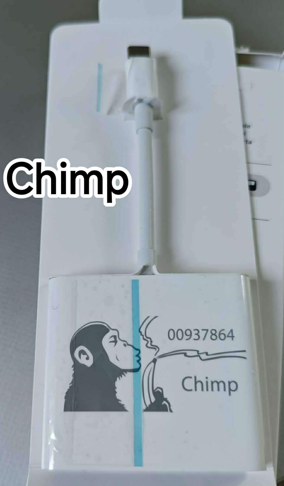
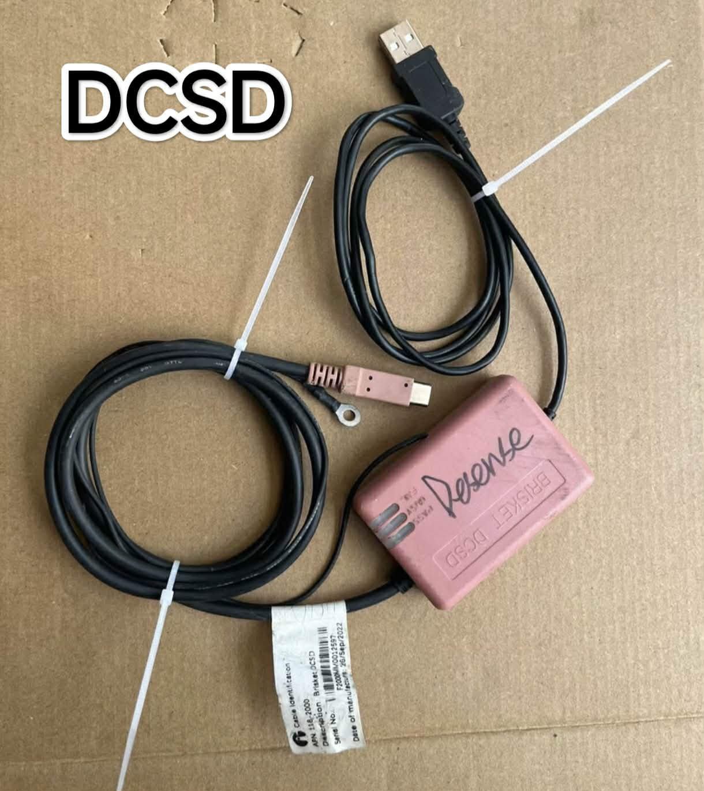
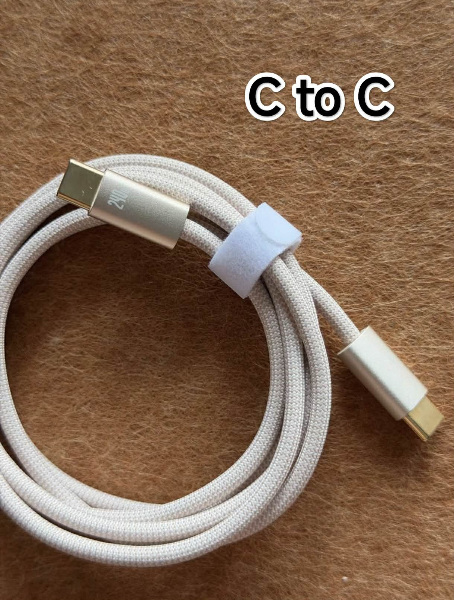

Requirements
Hardware
-
- MacOS 12 (I think so, and under iOS 26).You need to use a slightly newer version of macOS to be able to use the tools, and if possible, use Apple Silicon (M series chip).
- A DCSD cable or Chipm (if you are using an Intel Mac, a Chipm is required to jtag) to view UART logs and diags shell, jtag.
- For Apple silicon, you only need a standard C to C cable for JTAG. Below are some illustrative images.



- Device :
- iPhone 15plus CPFM00
- iPhone 15plus CPFM01
Software
Mac only
- HomeDiagnostic_Sunburst23A313: You can easily find it on Google.
- iRecovery : Allows interacting with DFU and recovery modes and includes an interactive recovery mode shell.
- Anya: iBoot/SEPOS decryption kit for JTAGgable iOS device prototypes.
- img4lib: unpakc and repack bootchain.
- SSH and SCP client : Interactive command line and files transfert from computer to iOS device.
- On MacOS, ssh and scp are usually built-in in the OS. If you prefer a GUI tool, you can use PuTTY for interactive shell and FileZilla to replace SCP. - ARM binary disassembler : IDA (best), Hopper (affordable) or Ghidra (free and openb-source, recommanded)
- Hex editor : I recommand Hexfined.